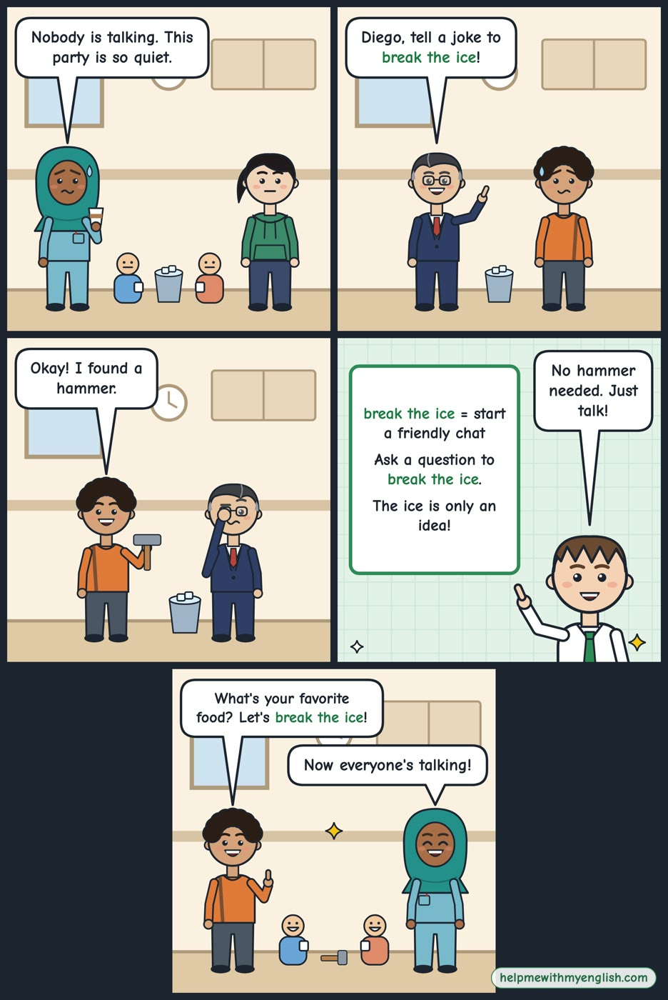

break the ice
To make people feel relaxed when they first meet.
A joke is a good way to break the ice at a party.
Tip: Use it as a verb phrase: 'break the ice with someone' or 'to break the ice'; it is common before a first meeting, a class, or a team event.
Hear it in conversation
Workbook
1. What does it mean?
In this conversation, what does break the ice mean?
2. Fill the gap
Our manager started the workshop with a quick game to before the real work began.
3. Choose the best reply
Ken: I'm meeting my partner's family for the first time this weekend, and I'm really nervous.
4. Your turn: speak
Tell me about a time you had to meet a group of new people. What did you do to feel more comfortable?
Show an example answer
When I started my new job, I didn't know anyone on my team. I brought some cake on my first Friday, which really helped to break the ice. After that, it was much easier to start conversations.
Answer key: break the ice
- 1. D. Help people feel comfortable and start talking when they first meet
- 2. break the ice
- 3. C. Maybe bring a small gift. It can help break the ice.
- 4. Example: When I started my new job, I didn't know anyone on my team. I brought some cake on my first Friday, which really helped to break the ice. After that, it was much easier to start conversations.
See it in a comic
